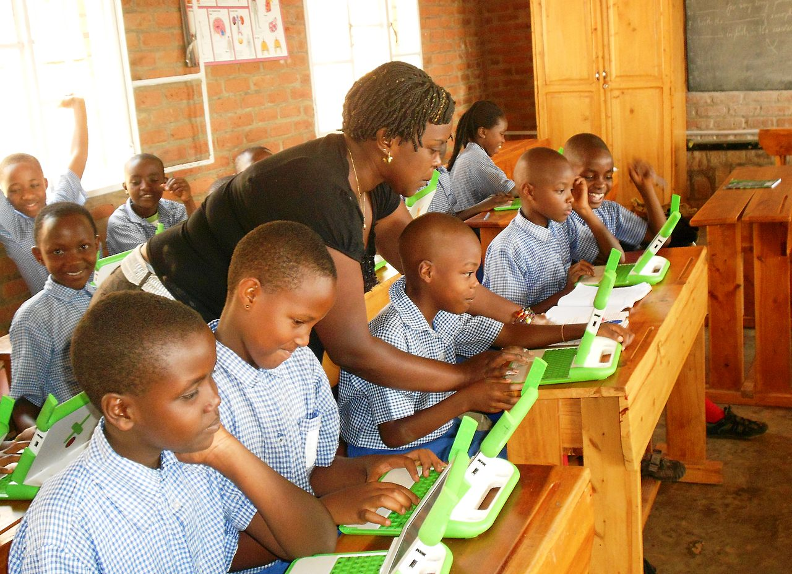
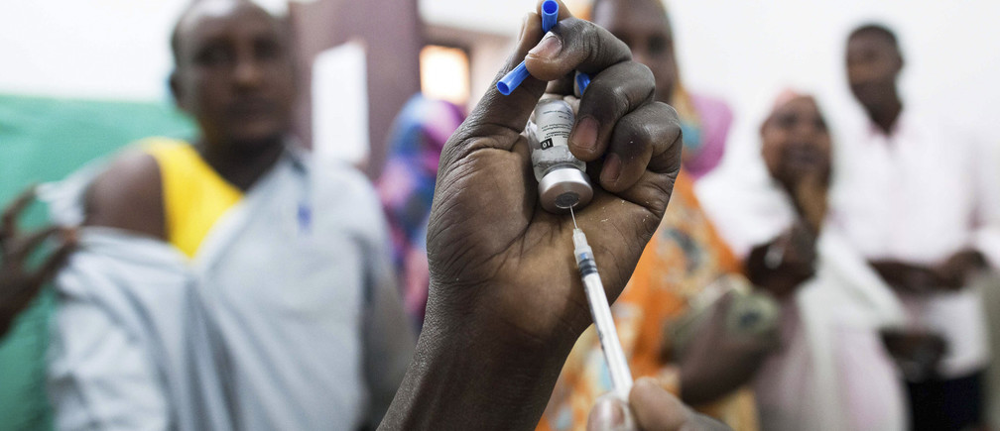
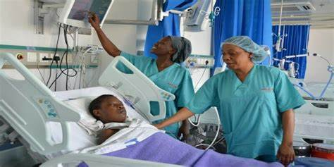
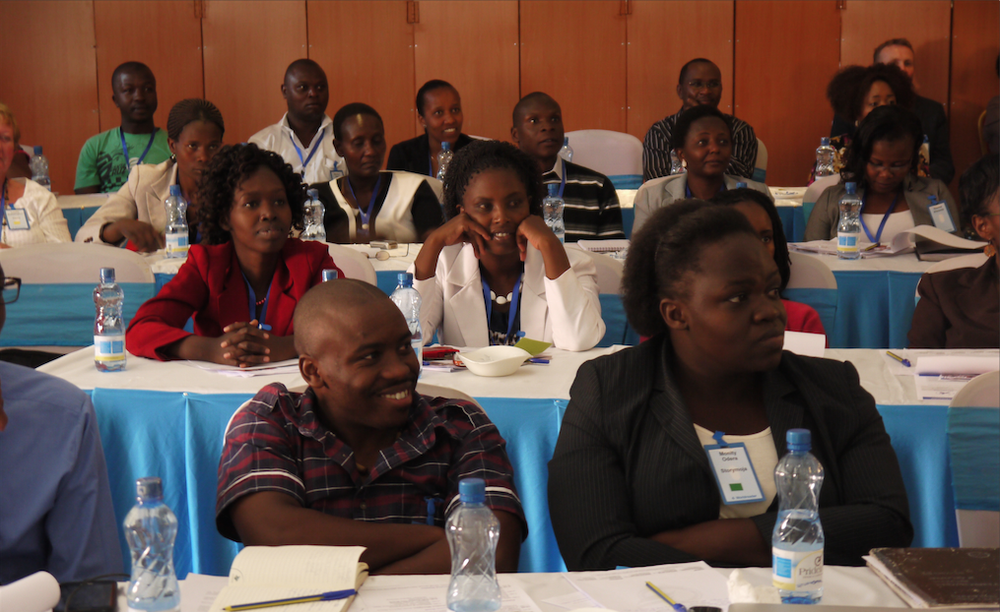
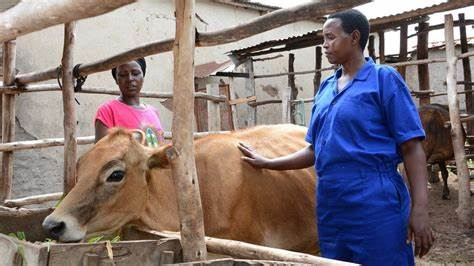
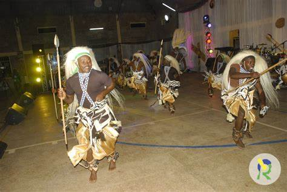

Read Services That you are Allowed to Request Below
| Service | Description | ways To Request |
|---|---|---|
Rwanda AirThis service is offered by the people in charge like those in Rwanda Air and You have to make sure that you have all requirements |
To access this service, you can book tickets via their official website or at local travel agencies. | |
 |
Birth RateBirth Rate: This refers to the number of live births per 1,000 people in a given population. Government health agencies provide statistics and monitor the birth rate regularly. |
This is offered through Health Center |
AssistanceAssistance: Assistance refers to the support offered to individuals in need, including financial or humanitarian aid. |
This service can be accessed through local government offices or NGOs. | |
|  | EducationEducation services provide learning opportunities through schools and institutions. |
Access is available by enrolling children in local schools or through government education programs. |
|  | Health careHealth services offer medical care and wellness programs |
People can access these services at local health centers, hospitals, or through government health insurance schemes. |
|  | treatment of PeopleThis refers to healthcare professionals providing medical treatment to patients. |
Access is available through health facilities in the sector, often facilitated by local health authorities |
|  | Training Of YouthTraining services aim to develop skills in various fields. |
Local government institutions or vocational training centers offer access to such programs. |
MeetingsMeetings refer to official gatherings for discussion and decision-making. |
These are typically organized by sector authorities and can be attended by community members or representatives. | |
 |
Land surveyingLand surveying services assess property boundaries and land ownership. |
Access is granted through the sector’s land registry office or land surveyors. |
GovernanceGovernance ensures public administration and policy implementation at the local level. |
Citizens can engage with governance through sector offices or community participation programs. | |
ICTInformation and Communication Technology (ICT) services include internet access and digital tools. |
These are available through local government initiatives or ICT centers in the sector. | |
|  | Gira InkaGira Inka is a program that provides cows to improve livelihoods. |
Interested individuals can access it through local government registration and community outreach programs. |
ItoreroItorero is a cultural and leadership development program |
People can participate by attending sessions organized by the sector or community-based organizations. | |
Protecting PeopleSecurity services ensure safety through law enforcement. |
Citizens can access police services and security support through local police stations. | |
Equal JusticeJustice services involve legal processes and dispute resolution. |
People can access legal aid or court services through local judiciary offices or legal institutions. | |
GusezeranaGusezerana refers to the traditional practice of reconciliation |
This can be accessed through community leaders or local mediation programs. | |
Gander ViolonceViolence prevention services aim to reduce conflict and abuse. |
These services are available through local police stations and community protection programs. | |
|  | EntertainmentGutarama refers to a cultural and community initiative for societal harmony |
It can be accessed through sector programs that promote unity and peace. |
development PlanA developing plan refers to the strategic planning for community progress. |
Citizens can engage in these through local sector development meetings and consultations. | |
Taxation SystemTax services involve the collection and management of taxes for public development. |
Taxpayers can access services through local government offices or the Rwanda Revenue Authority (RRA). |
SocialMedia
Email: rwimiyaga@gmail.com
YouTube: Rimiyaga
Twitter(X): RwimiyagaOfficial
WhatsApp: 0788887777
LinkedIn: RwimiyagaOfficial